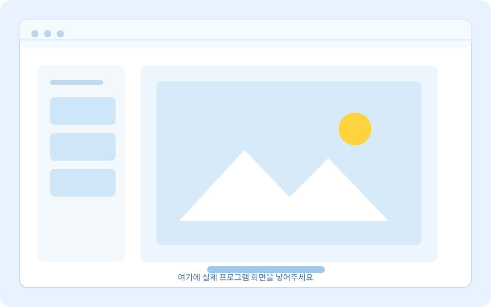

사진 폴더 탐색
폴더 안의 사진을 한눈에 살펴보고 필요한 사진을 빠르게 선택합니다.
SangPicture · Windows
쓸만한 가벼운 사진편집 프로그램이 없어서 직접 만들었습니다.
여러분의 임상에 많은 도움이 되길 바랍니다.
설치 파일은 GitHub Releases에서 제공합니다.
핵심 기능
복잡한 기능은 덜어내고, 임상 사진을 정리하며 자주 쓰는 작업에 집중했습니다.
폴더 안의 사진을 한눈에 살펴보고 필요한 사진을 빠르게 선택합니다.
필요한 부분만 남기고 사진의 밝기를 작업 흐름에 맞춰 조절합니다.
사진 방향을 바로잡고 회전하거나 좌우·상하로 간단하게 반전합니다.
여러 사진을 임시로 편집한 뒤 한 번에 저장해 반복 작업을 줄입니다.
임상 사진 정리와 빠른 반복 작업에 맞춘 도구입니다.

프로그램 화면
실제 프로그램 화면이 준비되면 이 영역의 이미지만 교체하세요. 현재는 웹사이트 배포를 위한 placeholder를 표시하고 있습니다.
권장 이미지 비율: 16:10 또는 16:9
최신 버전
버전 정보를 준비 중입니다.
Windows x64 설치 파일은 GitHub Releases에서 내려받을 수 있습니다. 설치 파일 자체는 이 웹사이트 저장소에 포함하지 않습니다.
Windows x64 설치 파일 받기공식 다운로드 주소를 준비 중입니다. 아래 설정 영역의 placeholder를 실제 GitHub 주소로 바꿔주세요.
설치 후에는 Release에 함께 올린 SHA-256 해시 파일과 설치 파일의 해시를 비교해 보세요.
만든 사람
임상에서 사진을 정리하고 반복해서 편집하는 시간을 조금이라도 줄이고 싶어 SangPicture를 만들었습니다.
약력
응원하기
SangPicture가 임상에 도움이 되었다면, 다음 업데이트를 이어갈 수 있도록 응원을 보내주세요. 작은 후원도 큰 힘이 됩니다.
PayPal로 후원하기PayPal 주소를 준비 중입니다. script.js의 설정 영역에서 주소를 교체해 주세요.